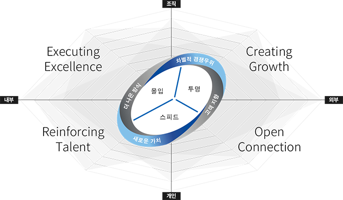

인재상
-
인재상
한솔이 추구하는 인재상은 『우리의 원칙』을 실천하는 인재입니다.
『우리의 원칙』은 한솔그룹의 고유한 경영 본질이 담긴 함축적인 표현이자 모든 의사 결정과 경영 활동의 기준이 되며, 미래를 성공으로 이끄는 성공 방정식입니다. 7가지 개념으로 구성된 우리의 원칙에는 "사업원칙"과 "조직원칙"이 있습니다. -
사업원칙
- 고객지향
-
고객의 마음을 먼저 생각한다
최고 경영진의 의사결정부터 알선 직원의 현장 업무 수행에 이르기까지 고객을 최우선으로 생각합니다. 한솔은 모든 행동이 고객의 문제를 해결하고, 잠재된 니즈를 충족시켜 고객에게 새로운 경험을 제공하는지 항상 묻고 고민하고 답합니다.
- 새로운 가치
-
새로운 가치가 미래를 결정한다
보다 더 과감하고, 창조적인 혁신으로 새로운 가치를 창출할 때 한솔의 미래는 한계가 없습니다. 한솔은 미래를 선도하기 위해 타깃 시장, 서비스 제공 방식, 기술과 사업 모델을 새롭게 혁신함으로써 새로운 가치를 창출합니다.
- 더 나은 방식
-
더 나은 방식이 우리 삶의 방식이다
오늘의 성과에 머무르지 않고 더 나은 방법과 결과를 향해 끊임없이 도전합니다. 한솔은 더 나은 방식의 추구를 통해 효율적인 프로세스 개선과 지속적인 품질 향상 등 탁월한 운영 효율성을 확보하고자 합니다.
- 차별적 경쟁 우위
-
차별적 경쟁우위가 우리의 생존 영역이다.
차별적 경쟁우위는 한솔의 모든 계열사가 달성해야 할 공통 목표이자, 미래 비즈니스 확대를 위한 기본 명제입니다. 한솔은 자원과 역량을 집중하여 차별적 우위를 갖는 사업 모델을 구축함으로써 미래를 선도하는 기업으로 도약할 것입니다.
-

조직원칙
- 몰입
-
탁월한 성과를 향한 집중과 일체감
탁월한 성과를 창출하기 위해서는 단순한 Doing을 넘어 제대로 집중하는 자세가 필요합니다. 구성원 모두가 업무 몰입으로 기존 성과에 적극적으로 도전할 수 있는 성장형 개인과 조직이 되도록 조직 문화를 이끌어갑니다.
- 투명
-
절차와 결과의 진실한 공유
투명한 기업문화는 모든 한솔의 구성원이 지켜나가야 할 자부심이자 생활신조입니다. 윤리적 업무 처리와 책임감은 물론, 열린 소통으로 고객, 주주, 임직원 및 지역사회를 위한 투명한 기업문화를 길러냅니다. 또한 합리적이고 공정한 조직 생활의 토대를 마련해, 상호 존중과 신뢰의 시너지를 높여갑니다.
- 스피드
-
단순성과 실질성에 기반한 신속함
한솔의 스피드는 형식보다 실질적인 것에 더 비중을 둔 단순성과 고객의 필요를 신속하게 포착한 타이밍에 기반합니다. 신속한 의사결정과 실행을 통해 고객이 필요로 하는 성과 창출을 앞당김으로써 고객이 감동하는 한솔 문화를 만들어갑니다.